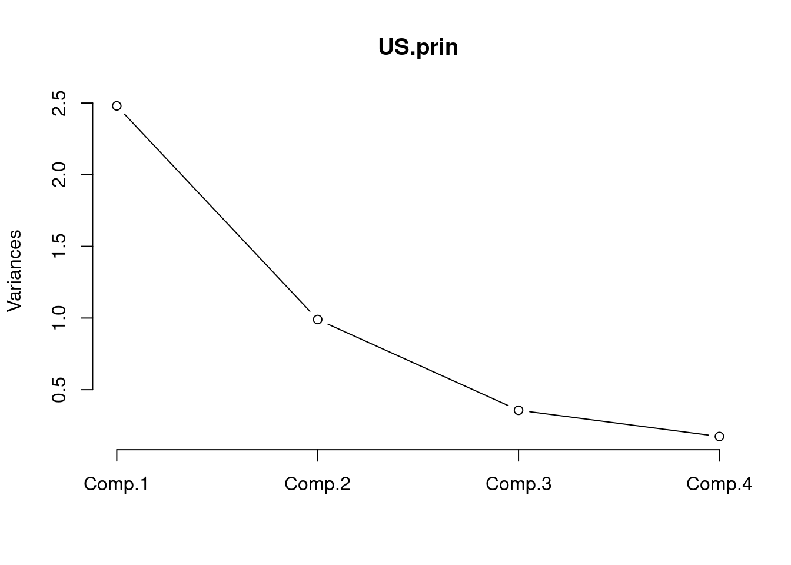
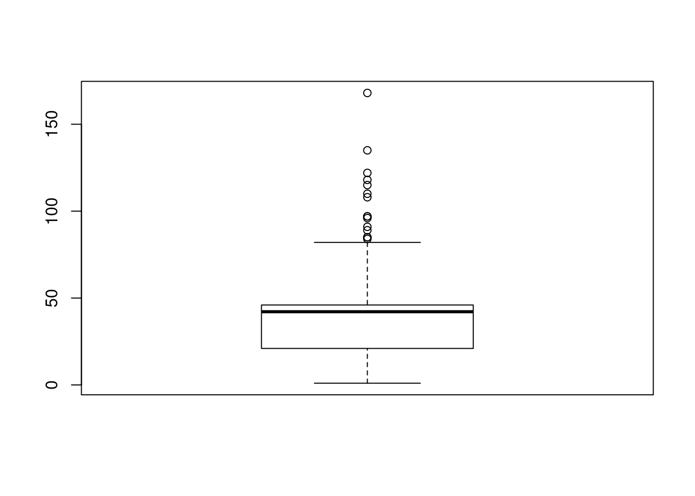

2 데이터 전처리
2.1 제어문
2.2 데이터 변환
2.2.1 파생변수 생성
2.2.2 변수 축소
2.2.2.1 주성분분석
2.2.2.1.1 개념
- 주성분분석이란 데이터에 여러 변수들이 있을 때 서로 상관성이 높은 변수들의 선형결합으로 이루어진 ‘주성분’ 이라는 새로운 변수를 만들어 변수들을 요약하고 축소하는 기법이다.
- 예를 들어, 변수 x와 z로 y를 예측하고자 할 때 x=3a, z=a+1, y=2x+z와 같은 관계가 성립된다면 굳이 x와 z라는 두 변수를 사용하지 않고, 변수 a로만 y를 예측하는 것이 더 좋을 것이다. 이와 같이 여러 변수의 선형조합으로 만들어진 주성분을 통해 변수들을 축소할 수 있다.
- 주성분분석을 할 때, 첫 번째 주성분으로 전체 변동을 가장 많이 설명할 수 있도록 하고, 두 번째 주성분으로는 첫 번째 주성분이 설명하지 못하는 나머지 변동을 정보의 손실 없이 가장 많이 설명할 수 있도록 변수들의 선형조합을 만든다. 각 주성분은 서로 독립인 것(상관계수 = 0)을 원칙으로 한다.
2.2.2.1.2 목적
- 소수의 주성분으로 차원을 축소함.
- 다중공선성이 존재하는 경우, 상관성이 없는 (적은) 주성분으로 변수들을 축소
- 주성분분석을 통해 변수 차원을 축소한 후 군집분석을 수행하면 군집화 결과와 연산속도를 개선할 수 있다.
2.2.2.1.3 주성분의 선택
- 기여율
- ’주성분 기여율’을 사용하여 주성분이 데이터를 얼마나 잘 설명하는지 평가함.
- 주성분 기여율 : 원변수의 총변동 (각 변수들의 분산값 총합) 분의 주성분 변수의 분산으로, 총변동에 대한 주성분의 설명력을 의미한다.
- 기여율은 1에 가까울수록 적절하고 0에 가까울수록 데이터에 대한 설명력이 떨어진다고 판단한다.
- 첫번째 주성분부터 차례대로 기여율을 합한 누적 기여율(cumulative proportion)이 85% 이상이 되면 해당 지점까지를 주성분의 수로 결정한다. 아래의 사진에서는 두 번째 주성분까지의 누적 기여율이 약 87%이므로, 주성분의 수를 두 개로 결정한다.
- 스크리 산점도 (Scree Plot)
- 주성분을 x축, 각 주성분의 고유값(주성분의 분산)을 y축에 둔 그래프이다. 고유치가 급격히 완만해지는 지점의 바로 전 단계로 주성분의 수를 선택한다.
2.2.2.1.4 R을 이용한 주성분 분석
prcomp(data, center=TRUE, scale.=FALSE, ...)princomp(data, cor=FALSE, scores=TRUE, ...)Q. R에 내장된 USArrests 데이터는 1973년 미국 50개주 100,000명의 인구 당 체포된 세가지 강력범죄수(assault, murder, rape)와 각 주마다 도시에 거주하는 인구의 비율(%)로 구성되어 있다. 주성분 분석을 수행하여 해당 데이터이ㅡ 변수들을 가장 잘 요약하는 주성분을 구하고 해석해 보자.
- USArrests 데이터는 변수들 간의 척도 차이가 상당히 크기 때문에 상관행렬을 사용하여 분석한다.
- 특이치 분해를 사용하는 경우 자료 행렬 각 변수의 평균과 제곱의 합이 1로 표준화되었다고 가정할 수 있다.
(1) 데이터 확인 및 산점도를 통한 변수 간 상관관계 파악
library(datasets)
data(USArrests)
head(USArrests)## Murder Assault UrbanPop Rape
## Alabama 13.2 236 58 21.2
## Alaska 10.0 263 48 44.5
## Arizona 8.1 294 80 31.0
## Arkansas 8.8 190 50 19.5
## California 9.0 276 91 40.6
## Colorado 7.9 204 78 38.7pairs(USArrests, panel=panel.smooth, main="USArrests data")
(2) 주성분분석 수행
US.prin <- princomp(USArrests, cor=TRUE)
summary(US.prin)## Importance of components:
## Comp.1 Comp.2 Comp.3 Comp.4
## Standard deviation 1.5748783 0.9948694 0.5971291 0.41644938
## Proportion of Variance 0.6200604 0.2474413 0.0891408 0.04335752
## Cumulative Proportion 0.6200604 0.8675017 0.9566425 1.00000000- 주성분 분석 결과에 summary함수를 적용하면 결과에 대한 요약 설명이 나온다. summary 결과로 나오는 Standard deviation은 주성분의 표준편차, Proportion of Variance는 주성분의 기여율, Cumulative Proportion은 누적기여율을 의미한다.
- 제1주성분과 제2주성분까지의 누적 기여율은 대략 86.8%로 2개의 주성분변수를 활용하여 전체 데이터의 약 86.8%를 설명할 수 있다.
plot(US.prin, type='l') - 주성분들에 의해 설명되는 변동의 비율은 Screeplot을 통해 시각적으로도 확인이 가능하다. 그래프의 3번재 주성분에서 기울기가 급격하게 줄어드는 형태를 보이므로, 그 이전 주성분인 2번째 주성분까지 선택하는 것이 적절하다.
- 주성분들에 의해 설명되는 변동의 비율은 Screeplot을 통해 시각적으로도 확인이 가능하다. 그래프의 3번재 주성분에서 기울기가 급격하게 줄어드는 형태를 보이므로, 그 이전 주성분인 2번째 주성분까지 선택하는 것이 적절하다.
(3) Loading
US.prin$loadings##
## Loadings:
## Comp.1 Comp.2 Comp.3 Comp.4
## Murder 0.536 0.418 0.341 0.649
## Assault 0.583 0.188 0.268 -0.743
## UrbanPop 0.278 -0.873 0.378 0.134
## Rape 0.543 -0.167 -0.818
##
## Comp.1 Comp.2 Comp.3 Comp.4
## SS loadings 1.00 1.00 1.00 1.00
## Proportion Var 0.25 0.25 0.25 0.25
## Cumulative Var 0.25 0.50 0.75 1.00- 주성분분석 결과의 loading을 통해 주성분계수 즉, 네 개의 변수가 각 주성분에 기여하는 가중치가 제시된다. 제 1주성분은 0.536 * Murder + 0.583 * Assault + 0.278 * UrbanPop + 0.543 * Rape의 선형결합식으로 이루어져 있음을 파악할 수 있다.
(4) Scores
주성분분석 결과, 차원축소로 얻어지는 주성분점수는 scores 인자를 통해 확인할 수 있다. 주성분 점수는 주성분들의 선형식을 통해 새롭게 계산된 각 행별 좌표를 나타낸다.
head(US.prin$scores)## Comp.1 Comp.2 Comp.3 Comp.4
## Alabama 0.9855659 1.1333924 0.44426879 0.156267145
## Alaska 1.9501378 1.0732133 -2.04000333 -0.438583440
## Arizona 1.7631635 -0.7459568 -0.05478082 -0.834652924
## Arkansas -0.1414203 1.1197968 -0.11457369 -0.182810896
## California 2.5239801 -1.5429340 -0.59855680 -0.341996478
## Colorado 1.5145629 -0.9875551 -1.09500699 0.001464887(5) 제 1-2 주성분에 의한 행렬도
biplot(US.prin, scale=0)
- biplot 함수는 제1주성분과 제2주성분으로 이루어진 좌표평면상에 원데이터 행들의 주성분점수를 산점도의 형태로 나타내고, 각 변수에 대한 주성분계수를 화살표로 시각화하여 그래프로 표현해 준다.
- 제1주성분의 모든 주성분계수는 양수이므로 가로축(PC1)을 기준으로 모든 변수가 0 이상의 값을 가리키는 축을 나타내고 있다. PC1을 이루는 선형 결합식에서 상대적 부하량의 절대값이 가장 큰 Assault 변수는 가장 수평의 형태를 나타내고 있으며, 상대적 부하량의 절대값이 가장 작은 UrbanPop 변수는 가장 수직에 가까운 형태를 나타내고 있다.
2.2.2.2 요인분석
2.2.2.2.1 개념
- 여러개의 변수들로 이루어진 데이터에서 변수들 간의 상관관계를 고려하여 서로 유사한 변수들을 묶어 새로운 잠재요인들을 추출해내는 분석방법으로, 변수를 축소하고 데이터를 요약하는데 사용
- 예를 들어, 시험성적에 대한 데이터가 ’국어, 영어, 중국어, 수학, 물리, 음악, 미술’에 해당하는 7개의 변수로 이루어져 있다고 하자. 이 7개가 아닌 공통의 변수들을 파악해 국어, 영어, 중국어를 (언어능력), 수락, 물리를 (수리능력), 음악, 미술을 (예술적 재능) 등과 같이 새로운 요인들로 구성해낼 때 요인분석을 사용한다.
- 요인분석을 수행하기 위해서는 변수가 간격척도 혹은 비율척도로 측정되어야 하며, 표본(관측치)의 크기는 100개 이상이 바람직하며 최소 50개 이상이 되어야 한다.
2.2.2.2.2 주성분분석 .vs. 요인분석
| 주성분분석 | 요인분석 | |
|---|---|---|
| 공통점 | * 원데이터를 활용하여 몇개의 새로운 변수를 생성 * 변수축소 및 데이터 요약에 사용됨 |
|
| 생성되는 변수의 수 | 통상적으로 2개 | 지정된 개수 없음 |
| 생성되는 변수의 이름 | 제1, 2주성분과 같이 표현됨 | 분석가가 변수의 이름을 지정함 |
| 생성되는 변수들의 관계 | 제1주성분이 가장중요. 2주성분이 그다음 | 대등한 관계 |
| 분석방법의 의미 | 목표변수를 잘 예측/분류하기 위해 기존 변수들의 선형결합으로 이루어진 몇 개의 주성분을 찾아냄 | 목표변수를 고려하지 않고 주어진 변수들을 비슷한 성격으로 묶어서 새로운 (잠재)변수를 생성 |
2.2.2.2.3 요인추출방법
- 주성분분석 : 변수들로부터 요인을 추출하는 방식으로, 전체분산을 토대로 요인을 추출. 가장 많이 사용
- 공통요인분석 : 잠재요인으로부터 변수들이 산출된 것으로 보는 방식, 공통분산만을 토대로 요인을 추출.
2.2.2.2.4 요인의 수 결정
- 고유값을 기준으로 할 때는, 고유값이 1이상인 요인들을 추출한다.
- 스크리 도표에서 요인의 설명력이 하락하다가 완만한 하락으로 추세가 바뀌기 직전의 요인수를 기준으로 요인을 추출한다.
- 경우에 따라 추출할 요인의 수를 사전에 정의한 후 요인분석을 수행할 수도 있다.
2.2.2.2.5 R을 이용한 요인분석
- R에서 요인추출법으로 주성분분석을 사용할 때는 prcomp 혹은 principal 함수를 활용하며, 요인추출법으로 공통요인분석을 사용할 때는 factanal 함수를 사용한다.
factanal(data, factors=n, rotation="varimax", scores="regression", ...)| 인자 | 설명 |
|---|---|
| data | 요인분석을 수행할 숫자형 행렬 혹은 데이터프레임 |
| factors | 요인의 개수 지정 |
| rotation | 요인 회전방법을 선택 (“varimax”, “promax”, “none”이 있음) |
| scores | 요인점수 계산방법을 선택 (“regression”, “Bartlett”가 있음) |
Q. R의 내장 데이터 swiss는 1888년 경 스위스 내 47개주의 사회 경제적 지표(교육, 농업 종사자 비율 등)와 출산율에 대한 데이터이다. 원활한 분석을 위해 먼저 해당 데이터의 6가지 변수들을 min-max 정규화한 뒤 (2장 3절 표준화와 정규화 참고), 요인분석을 실시하여 변수들을 3개의 요인으로 축소해 보자. (factanal 함수 사용)
(1) swiss 데이터 확인
data(swiss)
str(swiss)## 'data.frame': 47 obs. of 6 variables:
## $ Fertility : num 80.2 83.1 92.5 85.8 76.9 76.1 83.8 92.4 82.4 82.9 ...
## $ Agriculture : num 17 45.1 39.7 36.5 43.5 35.3 70.2 67.8 53.3 45.2 ...
## $ Examination : int 15 6 5 12 17 9 16 14 12 16 ...
## $ Education : int 12 9 5 7 15 7 7 8 7 13 ...
## $ Catholic : num 9.96 84.84 93.4 33.77 5.16 ...
## $ Infant.Mortality: num 22.2 22.2 20.2 20.3 20.6 26.6 23.6 24.9 21 24.4 ...(2) 정규화 수행 및 실습용 데이터 생성
Min <- apply(swiss, 2, min)
Max <- apply(swiss, 2, max)
swiss_fa <- scale(swiss, center=Min, scale=(Max-Min))
head(swiss_fa)## Fertility Agriculture Examination Education Catholic
## Courtelary 0.7860870 0.1785311 0.35294118 0.21153846 0.07981604
## Delemont 0.8365217 0.4960452 0.08823529 0.15384615 0.84506898
## Franches-Mnt 1.0000000 0.4350282 0.05882353 0.07692308 0.93254982
## Moutier 0.8834783 0.3988701 0.26470588 0.11538462 0.32314768
## Neuveville 0.7286957 0.4779661 0.41176471 0.26923077 0.03076137
## Porrentruy 0.7147826 0.3853107 0.17647059 0.11538462 0.90362800
## Infant.Mortality
## Courtelary 0.7215190
## Delemont 0.7215190
## Franches-Mnt 0.5949367
## Moutier 0.6012658
## Neuveville 0.6202532
## Porrentruy 1.0000000(3) 요인분석 수행
factanal(x = swiss_fa, factors=3)##
## Call:
## factanal(x = swiss_fa, factors = 3)
##
## Uniquenesses:
## Fertility Agriculture Examination Education
## 0.005 0.286 0.213 0.114
## Catholic Infant.Mortality
## 0.083 0.743
##
## Loadings:
## Factor1 Factor2 Factor3
## Fertility -0.512 0.203 0.832
## Agriculture -0.774 0.312 -0.129
## Examination 0.751 -0.423 -0.211
## Education 0.901 -0.262
## Catholic -0.186 0.913 0.220
## Infant.Mortality 0.500
##
## Factor1 Factor2 Factor3
## SS loadings 2.273 1.164 1.120
## Proportion Var 0.379 0.194 0.187
## Cumulative Var 0.379 0.573 0.759
##
## The degrees of freedom for the model is 0 and the fit was 1e-04- 요인분석 결과의 Proportion Var는 각 요인이 설명하는 분산의 비율이며 Cumulative Var는 요인별 해당값의 누적치이다. 세번째 요인에 대한 Cumulative Var 값이 0.759이므로 세 요인은 전체 데이터 분산의 약 76%를 설명할 수 있다고 해석이 가능한다.
2.2.3 표준화와 정규화
2.2.3.1 표준화 (standardization)
- 각 개체들이 평균을 기준으로 얼마나 떨어져 있는지를 나타내는 값으로 변환하는 과정을 의미하여, 표준화한 후 특정 범위를 벗어난 데이터를 확인하여 이상치 판별에 활용할 수도 있다.
- Z-Score 표준화는 각 요소의 값에서 평균을 뺀 후 표준편차로 나누어 수행한다. 변환 후 데이터의 평균은 0, 표준편차는 1의 값을 갖게 된다. scale 함수 혹은 사용자 정의 함수를 이용하여 R에서 구현할 수 있다.
scale(data, center=TRUE, scale=TRUE)| 인자 | 설명 |
|---|---|
| data | 숫자형벡터 |
| center | TRUE이면 데이터에서 해당 벡터의 평균을 뺌 |
Q. R의 내장 데이터 ’mtcars’의 mpg(마일)변수와 hp(총 마력)변수로만 이루어진 데이터프레임(test, cars)을 생성하고, 각 변수를 표준화한 새로운 변수를 추가해 보자. (mpg를 표준화한 변수의 이름은 mpg_scale, hp를 표준화한 변수의 이름은 hp_scale로 지정)
data("mtcars")
str(mtcars)## 'data.frame': 32 obs. of 11 variables:
## $ mpg : num 21 21 22.8 21.4 18.7 18.1 14.3 24.4 22.8 19.2 ...
## $ cyl : num 6 6 4 6 8 6 8 4 4 6 ...
## $ disp: num 160 160 108 258 360 ...
## $ hp : num 110 110 93 110 175 105 245 62 95 123 ...
## $ drat: num 3.9 3.9 3.85 3.08 3.15 2.76 3.21 3.69 3.92 3.92 ...
## $ wt : num 2.62 2.88 2.32 3.21 3.44 ...
## $ qsec: num 16.5 17 18.6 19.4 17 ...
## $ vs : num 0 0 1 1 0 1 0 1 1 1 ...
## $ am : num 1 1 1 0 0 0 0 0 0 0 ...
## $ gear: num 4 4 4 3 3 3 3 4 4 4 ...
## $ carb: num 4 4 1 1 2 1 4 2 2 4 ...test.cars <- mtcars[,c("mpg", "hp")]
head(test.cars)## mpg hp
## Mazda RX4 21.0 110
## Mazda RX4 Wag 21.0 110
## Datsun 710 22.8 93
## Hornet 4 Drive 21.4 110
## Hornet Sportabout 18.7 175
## Valiant 18.1 105test.cars <- transform(test.cars, mpg_scale=scale(test.cars$mpg), hp_scale=scale(test.cars$hp))
head(test.cars)## mpg hp mpg_scale hp_scale
## Mazda RX4 21.0 110 0.1508848 -0.5350928
## Mazda RX4 Wag 21.0 110 0.1508848 -0.5350928
## Datsun 710 22.8 93 0.4495434 -0.7830405
## Hornet 4 Drive 21.4 110 0.2172534 -0.5350928
## Hornet Sportabout 18.7 175 -0.2307345 0.4129422
## Valiant 18.1 105 -0.3302874 -0.60801862.2.3.2 정규화 (Normalization)
- 정규화란 데이터의 범위를 0과 1사이로 변환하여 데이터의 분포를 조정하는 방법으로, 데이터군 내에서 특정 개체가 가지는 위치를 파악하고 비교할 때 유용하게 사용할 수 있다.
- 일반적으로 많이 사용되는 min-max 정규화는 ’(xi - minx)/(maxi-minx)’의 공식을 이용하며, scale함수 혹은 사용자 정의 함수를 이용하는 등 다양한 방법을 사용할 수 있다.
2.2.3.3 scale 함수 이용
Min <- min(iris$Sepal.Length)
Max <- max(iris$Sepal.Length)
iris$SL_new <- scale(iris$Sepal.Length, center=Min, scale=Max-Min)
head(iris)## Sepal.Length Sepal.Width Petal.Length Petal.Width Species SL_new
## 1 5.1 3.5 1.4 0.2 setosa 0.22222222
## 2 4.9 3.0 1.4 0.2 setosa 0.16666667
## 3 4.7 3.2 1.3 0.2 setosa 0.11111111
## 4 4.6 3.1 1.5 0.2 setosa 0.08333333
## 5 5.0 3.6 1.4 0.2 setosa 0.19444444
## 6 5.4 3.9 1.7 0.4 setosa 0.305555562.3 데이터 결합 및 요약
2.3.1 데이터 결합
2.3.1.1 rbind
2.3.1.2 cbind
2.3.1.3 merge
- merge는 두 데이터프레임에서 기준이 되는 특정 칼럼의 값이 같은 행끼리 묶어 병합하는 함수이다. 이는 데이터베이스에서 join과 같은 역할을 한다.
merge(x, y, by, by.x, by.y, all=FALSE, all.x,)(id_name <- data.frame(id=c("c01", "c02", "c03", "c04", "c05", "c06", "c07"),
last_name=c("Lee", "Kim", "Choi", "park", "Lim", "Bae", "Kim")))## id last_name
## 1 c01 Lee
## 2 c02 Kim
## 3 c03 Choi
## 4 c04 park
## 5 c05 Lim
## 6 c06 Bae
## 7 c07 Kim(id_number <- data.frame(id=c("c03", "c04", "c05", "c06", "c07", "c08", "c09"),
number=c(3, 1, 0, 7, 3, 4, 1)))## id number
## 1 c03 3
## 2 c04 1
## 3 c05 0
## 4 c06 7
## 5 c07 3
## 6 c08 4
## 7 c09 1Q-1. Inner Join
merge(id_name, id_number, by="id")## id last_name number
## 1 c03 Choi 3
## 2 c04 park 1
## 3 c05 Lim 0
## 4 c06 Bae 7
## 5 c07 Kim 3Q-2. Outer Join
merge(id_name, id_number, by="id", all=TRUE)## id last_name number
## 1 c01 Lee NA
## 2 c02 Kim NA
## 3 c03 Choi 3
## 4 c04 park 1
## 5 c05 Lim 0
## 6 c06 Bae 7
## 7 c07 Kim 3
## 8 c08 <NA> 4
## 9 c09 <NA> 1Q-3. Left Outer Join
merge(id_name, id_number, by="id", all.x=TRUE)## id last_name number
## 1 c01 Lee NA
## 2 c02 Kim NA
## 3 c03 Choi 3
## 4 c04 park 1
## 5 c05 Lim 0
## 6 c06 Bae 7
## 7 c07 Kim 3Q-4. Right Outer Join
merge(id_name, id_number, by="id", all.y=TRUE)## id last_name number
## 1 c03 Choi 3
## 2 c04 park 1
## 3 c05 Lim 0
## 4 c06 Bae 7
## 5 c07 Kim 3
## 6 c08 <NA> 4
## 7 c09 <NA> 12.3.2 데이터 요약
2.3.2.1 aggregate
aggregate(x, by, FUN)
aggregate(formula, data, FUN)Q1. iris 데이터에서 종별 Sepal.width의 평균을 구해보자.
aggregate(Sepal.Width~Species, iris, mean)## Species Sepal.Width
## 1 setosa 3.428
## 2 versicolor 2.770
## 3 virginica 2.974Q2. iris 데이터에서 종별 Sepal.Width와 Petal.Width의 평균을 구해보자.
aggregate(cbind(Sepal.Width, Petal.Width)~Species, iris, mean)## Species Sepal.Width Petal.Width
## 1 setosa 3.428 0.246
## 2 versicolor 2.770 1.326
## 3 virginica 2.974 2.0262.3.2.2 table
Q1. 내장 데이터 Titanic은 타이타닉호 탑승자들의 특성에 따른 생존여부를 기록해놓은 데이터이다. Titanic 데이터에서 좌석등급을 의미하는 Class 변수에 대해서 도수분포표를 생성해 보자.
내장데이터 Titanic의 구조 확인
str(Titanic)## 'table' num [1:4, 1:2, 1:2, 1:2] 0 0 35 0 0 0 17 0 118 154 ...
## - attr(*, "dimnames")=List of 4
## ..$ Class : chr [1:4] "1st" "2nd" "3rd" "Crew"
## ..$ Sex : chr [1:2] "Male" "Female"
## ..$ Age : chr [1:2] "Child" "Adult"
## ..$ Survived: chr [1:2] "No" "Yes"데이터프레임으로 변환한 뒤 다시 구조를 확인
Titanic<-as.data.frame(Titanic)
str(Titanic)## 'data.frame': 32 obs. of 5 variables:
## $ Class : Factor w/ 4 levels "1st","2nd","3rd",..: 1 2 3 4 1 2 3 4 1 2 ...
## $ Sex : Factor w/ 2 levels "Male","Female": 1 1 1 1 2 2 2 2 1 1 ...
## $ Age : Factor w/ 2 levels "Child","Adult": 1 1 1 1 1 1 1 1 2 2 ...
## $ Survived: Factor w/ 2 levels "No","Yes": 1 1 1 1 1 1 1 1 1 1 ...
## $ Freq : num 0 0 35 0 0 0 17 0 118 154 ...table 함수를 이용하여 범주형 변수 Class에 대한 도수분포표를 생성
table(Titanic$Class)##
## 1st 2nd 3rd Crew
## 8 8 8 8Q2. 내장데이터 Titanic에서 Survived 변수는 승객의 생존여부를 의미한다. 좌석등급과 생존여부의 관계를 살펴보기 위해 Class 변수에 따른 Survived 변수의 도수를 표 형태로 나타내 보자.
table(Titanic$Class, Titanic$Survived)##
## No Yes
## 1st 4 4
## 2nd 4 4
## 3rd 4 4
## Crew 4 42.3.2.3 prop.table
prop.table(table)
prop.table(table, 1)
prop.table(table, 2)Q. Titanic 데이터에서 Age 변수는 해당 승객이 어른인지 아이인지의 여부를 나타낸다. Age 변수에 따른 생존여부의 관계를 전체에 대한 비율, 행별 비율, 열별 비율로 살펴보자.
prop.table(table(Titanic$Age, Titanic$Survived))##
## No Yes
## Child 0.25 0.25
## Adult 0.25 0.25prop.table(table(Titanic$Age, Titanic$Survived), 1)##
## No Yes
## Child 0.5 0.5
## Adult 0.5 0.5prop.table(table(Titanic$Age, Titanic$Survived), 2)##
## No Yes
## Child 0.5 0.5
## Adult 0.5 0.52.3.3 apply 계열 함수
2.3.3.1 apply
apply는 데이터의 행 혹은 열 방향으로 주어진 함수를 한번에 적용한 뒤 그 결과를 벡터, 배열, 리스트로 반환하는 함수이다.
apply(X, MARGIN, FUN)a <- matrix(1:12, nrow=4, ncol=3)
apply(a, 1, max)## [1] 9 10 11 12apply(iris[, 1:4], 2, mean)## Sepal.Length Sepal.Width Petal.Length Petal.Width
## 5.843333 3.057333 3.758000 1.1993332.3.3.2 lapply
lapply(X, FUN, ...)a <- c(1, 2, 3)
lapply(a, FUN=function(x){x ^ 2})## [[1]]
## [1] 1
##
## [[2]]
## [1] 4
##
## [[3]]
## [1] 9class(lapply(a, FUN=function(x){x^2}))## [1] "list"b<- lapply(a, FUN=function(x){x^2})
unlist(b)## [1] 1 4 92.3.3.3 sapply
sapply(X, FUN, simplify=TRUE, ...)Q1. iris 데이터에서 각 칼럼별 데이터 타입을 구해보자.
sapply(iris, class)## Sepal.Length Sepal.Width Petal.Length Petal.Width Species SL_new
## "numeric" "numeric" "numeric" "numeric" "factor" "matrix"Q2. iris 데이터에서 각 칼럼에 summary 함수를 적용해 보자.
sapply(iris, summary)## $Sepal.Length
## Min. 1st Qu. Median Mean 3rd Qu. Max.
## 4.300 5.100 5.800 5.843 6.400 7.900
##
## $Sepal.Width
## Min. 1st Qu. Median Mean 3rd Qu. Max.
## 2.000 2.800 3.000 3.057 3.300 4.400
##
## $Petal.Length
## Min. 1st Qu. Median Mean 3rd Qu. Max.
## 1.000 1.600 4.350 3.758 5.100 6.900
##
## $Petal.Width
## Min. 1st Qu. Median Mean 3rd Qu. Max.
## 0.100 0.300 1.300 1.199 1.800 2.500
##
## $Species
## setosa versicolor virginica
## 50 50 50
##
## $SL_new
## V1
## Min. :0.0000
## 1st Qu.:0.2222
## Median :0.4167
## Mean :0.4287
## 3rd Qu.:0.5833
## Max. :1.00002.3.3.4 vapply
vapply(X, FUN, FUN.VALUE, ...)Q. 1~100까지의 숫자가 저장된 리스트에 fivenum 함수를 적용한 후, 각 값에 이름을 부여하여 리스트 형태로 출력해 보자.
test <- c(1:100)
fivenum(test)## [1] 1.0 25.5 50.5 75.5 100.0test <- list(test)
(test2 <- vapply(test, fivenum, c("Min"=0, "Q1"=0, "Median"=0, "Q3"=0, "Max"=0)))## [,1]
## Min 1.0
## Q1 25.5
## Median 50.5
## Q3 75.5
## Max 100.02.3.3.5 mapply
mapply(FUN, arg1, arg2, ..., argn, ...)Q. 1을 4번, 2를 3번, 3을 2번, 4를 1번 반복하는 4개의 수열을 구해보자. 이 때 rep 함수를 이용할 때와 mapply 함수를 이용 할 때를 비교해 보자.
mapply(rep, c(1:4), c(4:1))## [[1]]
## [1] 1 1 1 1
##
## [[2]]
## [1] 2 2 2
##
## [[3]]
## [1] 3 3
##
## [[4]]
## [1] 42.3.3.6 tapply
tapply 함수를 이용하면 데이터를 특정 기준에 따라 그룹으로 나눈 뒤 각 그룹별로 함수를 적용하여 그 결과를 반환할 수 있다.
tapply(DATA, INDEX, FUN, ...)Q1. R의 googleVis 패키지에 있는 Fruits 데이터에서 과일종류별 판매량의 평균을 구해보자.
install.packages(setdiff("googleVis", rownames(installed.packages())))
library(googleVis)## Creating a generic function for 'toJSON' from package 'jsonlite' in package 'googleVis'##
## Welcome to googleVis version 0.6.10
##
## Please read Google's Terms of Use
## before you start using the package:
## https://developers.google.com/terms/
##
## Note, the plot method of googleVis will by default use
## the standard browser to display its output.
##
## See the googleVis package vignettes for more details,
## or visit https://github.com/mages/googleVis.
##
## To suppress this message use:
## suppressPackageStartupMessages(library(googleVis))head(Fruits)## Fruit Year Location Sales Expenses Profit Date
## 1 Apples 2008 West 98 78 20 2008-12-31
## 2 Apples 2009 West 111 79 32 2009-12-31
## 3 Apples 2010 West 89 76 13 2010-12-31
## 4 Oranges 2008 East 96 81 15 2008-12-31
## 5 Bananas 2008 East 85 76 9 2008-12-31
## 6 Oranges 2009 East 93 80 13 2009-12-31tapply(Fruits$Sales, Fruits$Fruit, mean)## Apples Bananas Oranges
## 99.33333 86.66667 95.66667Q2. Fruits 데이터에서 Location이 West인 것과 아닌 것으로 그룹을 지정하여 Profit의 평균을 구해보자.
tapply(Fruits$Profit, Fruits$Location=="West", mean)## FALSE TRUE
## 11.66667 21.666672.4 패키지를 활용한 데이터 전처리
2.4.1 plyr
2.4.1.1 plyr 패키지
plyr 패키지의 함수들은 데이터를 분할(split)한 뒤 원하는 방향으로 특정 함수를 적용하고 (apply), 그 결과를 재조합 (combine) 하여 반환해 준다.
2.4.1.2 adply
adply(data, margins, fun)Q. R의 iris 데이터에서 Petal.Length 변수가 1.5 미만이면서 Species 변수 값이 ’setosa’인 조건을 만족하는 경우 ’1’을 그렇지 않은 경우 ’0’을 부여한 칼럼을 생성하여, 원래의 iris 데이터와 함께 데이터프레임 형태로 출력해 보자.
install.packages(setdiff("plyr", rownames(installed.packages())))
library(plyr)
head(adply(iris, 1,
function(row) {ifelse(row$Petal.Length < 1.5 & row$Species == "setosa", "1", "0")}))## Sepal.Length Sepal.Width Petal.Length Petal.Width Species SL_new V1
## 1 5.1 3.5 1.4 0.2 setosa 0.22222222 1
## 2 4.9 3.0 1.4 0.2 setosa 0.16666667 1
## 3 4.7 3.2 1.3 0.2 setosa 0.11111111 1
## 4 4.6 3.1 1.5 0.2 setosa 0.08333333 0
## 5 5.0 3.6 1.4 0.2 setosa 0.19444444 1
## 6 5.4 3.9 1.7 0.4 setosa 0.30555556 02.4.1.3 ddply
ddply(data, .variables, ddply-func, fun)Q1. iris 데이터에서 Species별로 나머지 네 개 변수의 평균을 출력해 보자.
ddply(iris, .(Species), function(sub) {
data.frame(
mean_SL = mean(sub$Sepal.Length), mean_SW = mean(sub$Sepal.Width),
mean_PL = mean(sub$Petal.Length), mean_PW = mean(sub$Petal.Width)
)
})## Species mean_SL mean_SW mean_PL mean_PW
## 1 setosa 5.006 3.428 1.462 0.246
## 2 versicolor 5.936 2.770 4.260 1.326
## 3 virginica 6.588 2.974 5.552 2.026Q2. iris 데이터에서 Species와 Petal.Length가 1.5 미만인지 여부로 데이터를 그룹지어 네 개 변수의 평균을 출력해 보자.
ddply(iris, .(Species, Petal.Length<1.5), function(sub) {
data.frame(
mean_SL = mean(sub$Sepal.Length), mean_SW = mean(sub$Sepal.Width),
mean_PL = mean(sub$Petal.Length), mean_PW = mean(sub$Petal.Width))
})## Species Petal.Length < 1.5 mean_SL mean_SW mean_PL mean_PW
## 1 setosa FALSE 5.107692 3.515385 1.588462 0.2730769
## 2 setosa TRUE 4.895833 3.333333 1.325000 0.2166667
## 3 versicolor FALSE 5.936000 2.770000 4.260000 1.3260000
## 4 virginica FALSE 6.588000 2.974000 5.552000 2.02600002.4.1.3.1 transform
head(ddply(baseball, .(id), transform, avgG=sum(g)/length(year)))## id year stint team lg g ab r h X2b X3b hr rbi sb cs bb so ibb
## 1 aaronha01 1954 1 ML1 NL 122 468 58 131 27 6 13 69 2 2 28 39 NA
## 2 aaronha01 1955 1 ML1 NL 153 602 105 189 37 9 27 106 3 1 49 61 5
## 3 aaronha01 1956 1 ML1 NL 153 609 106 200 34 14 26 92 2 4 37 54 6
## 4 aaronha01 1957 1 ML1 NL 151 615 118 198 27 6 44 132 1 1 57 58 15
## 5 aaronha01 1958 1 ML1 NL 153 601 109 196 34 4 30 95 4 1 59 49 16
## 6 aaronha01 1959 1 ML1 NL 154 629 116 223 46 7 39 123 8 0 51 54 17
## hbp sh sf gidp avgG
## 1 3 6 4 13 143.3913
## 2 3 7 4 20 143.3913
## 3 2 5 7 21 143.3913
## 4 0 0 3 13 143.3913
## 5 1 0 3 21 143.3913
## 6 4 0 9 19 143.39132.4.1.3.2 mutate
# avgG 칼럼과 avgG_RND 칼럼을 한번에 추가하여 출력.
# 이 경우, mutate가 아닌 tansform을 사용하면 에러가 발생함.
head(ddply(baseball, .(id), mutate, avgG=sum(g)/length(year), avgG_RND=round(avgG)))## id year stint team lg g ab r h X2b X3b hr rbi sb cs bb so ibb
## 1 aaronha01 1954 1 ML1 NL 122 468 58 131 27 6 13 69 2 2 28 39 NA
## 2 aaronha01 1955 1 ML1 NL 153 602 105 189 37 9 27 106 3 1 49 61 5
## 3 aaronha01 1956 1 ML1 NL 153 609 106 200 34 14 26 92 2 4 37 54 6
## 4 aaronha01 1957 1 ML1 NL 151 615 118 198 27 6 44 132 1 1 57 58 15
## 5 aaronha01 1958 1 ML1 NL 153 601 109 196 34 4 30 95 4 1 59 49 16
## 6 aaronha01 1959 1 ML1 NL 154 629 116 223 46 7 39 123 8 0 51 54 17
## hbp sh sf gidp avgG avgG_RND
## 1 3 6 4 13 143.3913 143
## 2 3 7 4 20 143.3913 143
## 3 2 5 7 21 143.3913 143
## 4 0 0 3 13 143.3913 143
## 5 1 0 3 21 143.3913 143
## 6 4 0 9 19 143.3913 1432.4.1.3.3 summarise
head(ddply(baseball, .(id), summarise, year_fin=max(year)))## id year_fin
## 1 aaronha01 1976
## 2 abernte02 1972
## 3 adairje01 1970
## 4 adamsba01 1926
## 5 adamsbo03 1959
## 6 adcocjo01 1966head(ddply(baseball, .(team), summarise, hr_sum=sum(hr)))## team hr_sum
## 1 ALT 0
## 2 ANA 134
## 3 ARI 809
## 4 ATL 3272
## 5 BAL 4243
## 6 BFN 742.4.2 dplyr
2.4.2.1 dplyr 패키지
2.4.2.2 filter
dataframe name %>% filter(condition)Q. Cars93 데이터에서 제조사가 “Audi” 혹은 “BMW”이면서, 엔진크기가 2.4 이상인 행들만 추출해 보자.
install.packages(setdiff("dplyr", rownames(installed.packages())))
library(dplyr)##
## Attaching package: 'dplyr'## The following objects are masked from 'package:plyr':
##
## arrange, count, desc, failwith, id, mutate, rename, summarise,
## summarize## The following objects are masked from 'package:stats':
##
## filter, lag## The following objects are masked from 'package:base':
##
## intersect, setdiff, setequal, unionlibrary(MASS)##
## Attaching package: 'MASS'## The following object is masked from 'package:dplyr':
##
## selectCars93 %>% filter((Manufacturer=="Audi"|Manufacturer=="BMW") & EngineSize >= 2.4)## Manufacturer Model Type Min.Price Price Max.Price MPG.city MPG.highway
## 1 Audi 90 Compact 25.9 29.1 32.3 20 26
## 2 Audi 100 Midsize 30.8 37.7 44.6 19 26
## 3 BMW 535i Midsize 23.7 30.0 36.2 22 30
## AirBags DriveTrain Cylinders EngineSize Horsepower RPM
## 1 Driver only Front 6 2.8 172 5500
## 2 Driver & Passenger Front 6 2.8 172 5500
## 3 Driver only Rear 4 3.5 208 5700
## Rev.per.mile Man.trans.avail Fuel.tank.capacity Passengers Length Wheelbase
## 1 2280 Yes 16.9 5 180 102
## 2 2535 Yes 21.1 6 193 106
## 3 2545 Yes 21.1 4 186 109
## Width Turn.circle Rear.seat.room Luggage.room Weight Origin Make
## 1 67 37 28 14 3375 non-USA Audi 90
## 2 70 37 31 17 3405 non-USA Audi 100
## 3 69 39 27 13 3640 non-USA BMW 535i2.4.2.3 select
Q1. Cars93 데이터의 모델번호, 종류, 가격 변수들만 추출해 보자.
# Cars93 %>% select(Model, Type, Price)
# Error in select(., Model, Type, Price) : unused arguments (Model, Type, Price) Calls: <Anomymous> ...
# withCallingHandlers -> withVisible -> eval -> eval -> %>% Execution halted
# 에러 발생 이유 : MASS 패키지의 select()와 dplyr의 select()가 충돌하기 때문
head(Cars93 %>% dplyr::select(Model, Type, Price))## Model Type Price
## 1 Integra Small 15.9
## 2 Legend Midsize 33.9
## 3 90 Compact 29.1
## 4 100 Midsize 37.7
## 5 535i Midsize 30.0
## 6 Century Midsize 15.7Q2. 제조사가 “Chevrolet” 혹은 “Volkswagen” 이면서, 가격이 10 이상인 행들의 제조사, 모델, 종류, 가격 변수들만 추출해 보자.
Cars93 %>%
filter((Manufacturer=="Chevrolet"|Manufacturer=="Volkswagen") & Price >= 10) %>%
dplyr::select(Manufacturer, Model, Type, Price)## Manufacturer Model Type Price
## 1 Chevrolet Cavalier Compact 13.4
## 2 Chevrolet Corsica Compact 11.4
## 3 Chevrolet Camaro Sporty 15.1
## 4 Chevrolet Lumina Midsize 15.9
## 5 Chevrolet Lumina_APV Van 16.3
## 6 Chevrolet Astro Van 16.6
## 7 Chevrolet Caprice Large 18.8
## 8 Chevrolet Corvette Sporty 38.0
## 9 Volkswagen Eurovan Van 19.7
## 10 Volkswagen Passat Compact 20.0
## 11 Volkswagen Corrado Sporty 23.32.4.2.4 group_by 와 summarise
Q1. Cars93 데이터의 제조사별 가격의 평균과 무게의 최댓값을 산출한 뒤 변수명을 각각 mean_Price, max_Weight로 지정하여 출력해 보자.
Cars93 %>% group_by(Manufacturer) %>%
summarise(mean_Price=mean(Price), max_Weight=max(Weight))## # A tibble: 32 x 3
## Manufacturer mean_Price max_Weight
## <fct> <dbl> <int>
## 1 Acura 24.9 3560
## 2 Audi 33.4 3405
## 3 BMW 30 3640
## 4 Buick 21.6 4105
## 5 Cadillac 37.4 3935
## 6 Chevrolet 18.2 4025
## 7 Chrylser 18.4 3515
## 8 Chrysler 22.6 3570
## 9 Dodge 15.7 3805
## 10 Eagle 15.8 3490
## # … with 22 more rowsQ2. 종류와 에어백을 기준으로 데이터를 그룹화한 뒤, 자동차 평균 무게를 구해 보자.
Cars93 %>% group_by(Type, AirBags) %>% summarise(mean_Weight=mean(Weight))## `summarise()` has grouped output by 'Type'. You can override using the `.groups` argument.## # A tibble: 15 x 3
## # Groups: Type [6]
## Type AirBags mean_Weight
## <fct> <fct> <dbl>
## 1 Compact Driver & Passenger 3062.
## 2 Compact Driver only 2991.
## 3 Compact None 2730
## 4 Large Driver & Passenger 3639.
## 5 Large Driver only 3728.
## 6 Midsize Driver & Passenger 3554.
## 7 Midsize Driver only 3344.
## 8 Midsize None 3285
## 9 Small Driver only 2423
## 10 Small None 2278.
## 11 Sporty Driver & Passenger 3115
## 12 Sporty Driver only 2939.
## 13 Sporty None 2578.
## 14 Van Driver only 3742.
## 15 Van None 38752.4.2.5 mutate
mutate는 데이터에 새로운 파생변수를 추가해 주는 함수이며, 사용법은 아래와 같다.
Q1. Cars93 데이터에서 가격이 12미만이면 “low”, 12 이상 23 미만이면 “middle”, 23 이상이면 “high” 값을 가지는 Pr_level 변수를 생성한 뒤, 모델, 가격, 새로운 파생변수 Pr_level만 출력해 보자.
head(
Cars93 %>%
mutate(Pr_level=ifelse(Price < 12, "low", ifelse(Price >= 12 & Price < 23, "middle", "high"))) %>%
dplyr::select(Model, Price, Pr_level)
)## Model Price Pr_level
## 1 Integra 15.9 middle
## 2 Legend 33.9 high
## 3 90 29.1 high
## 4 100 37.7 high
## 5 535i 30.0 high
## 6 Century 15.7 middle2.4.2.6 arrange
arrange는 특정열 기준으로 데이터를 정렬해주는 함수이며, 사용법은 아래와 같다.
Q. Cars93 데이터에서 종류가 “Midsize” 혹은 “Small”인 데이터의 Model, Type, Weight, Price 변수들만 추출한 뒤, 종류별로 Weight 변수값들이 Weight의 중앙값보다 작은 경우는 “low”, 중앙값 이상인 경우 “high” 값을 갖는 Weight_lv 변수를 생성하라. 그리고 Price 변수를 기준으로 데이터를 오름차순으로 정렬하여 출력하라.
Cars93 %>%
filter(Type %in% c("Midsize", "Small")) %>%
dplyr::select(Model, Type, Weight, Price) %>%
group_by(Type) %>%
mutate(Weight_lv = ifelse(Weight < median(Weight), "low", "high")) %>%
arrange(Price)## # A tibble: 43 x 5
## # Groups: Type [2]
## Model Type Weight Price Weight_lv
## <fct> <fct> <int> <dbl> <chr>
## 1 Festiva Small 1845 7.4 low
## 2 Excel Small 2345 8 high
## 3 323 Small 2325 8.3 low
## 4 Metro Small 1695 8.4 low
## 5 Justy Small 2045 8.4 low
## 6 Swift Small 1965 8.6 low
## 7 LeMans Small 2350 9 high
## 8 Fox Small 2240 9.1 low
## 9 Colt Small 2270 9.2 low
## 10 Tercel Small 2055 9.8 low
## # … with 33 more rows2.4.2.7 {left, right, inner, full}_join
Q. 카페에서 판매하는 메뉴 코드, 이름을 담은 데이터 ’NAME’과 메뉴코드 해당 메뉴의 가격을 담은 데이터 ’PRICE’를 생성해보자. 그 후 각 메뉴의 고유코드를 의미하는 code 변수를 기준으로 left, right, inner, full_join을 수행하여 결과를 확인해 보자.
NAME<-data.frame(code=c("A01", "A02", "A03"), name=c("coffee", "cake", "cookie"))
PRICE<-data.frame(code=c("A01", "A02", "A04"), price=c(3000, 4000, 3000))(cafe_left <- left_join(NAME, PRICE, by="code"))## code name price
## 1 A01 coffee 3000
## 2 A02 cake 4000
## 3 A03 cookie NA(cafe_right <- right_join(NAME, PRICE, by="code"))## code name price
## 1 A01 coffee 3000
## 2 A02 cake 4000
## 3 A04 <NA> 3000(cafe_inner <- inner_join(NAME, PRICE, by="code"))## code name price
## 1 A01 coffee 3000
## 2 A02 cake 4000(cafe_full <- full_join(NAME, PRICE, by="code"))## code name price
## 1 A01 coffee 3000
## 2 A02 cake 4000
## 3 A03 cookie NA
## 4 A04 <NA> 30002.4.2.8 bind_rows과 bind_cols
# rbind(NAME, PRICE)
# 변수명이 다르므로 에러가 발생함
bind_rows(NAME,PRICE)## code name price
## 1 A01 coffee NA
## 2 A02 cake NA
## 3 A03 cookie NA
## 4 A01 <NA> 3000
## 5 A02 <NA> 4000
## 6 A04 <NA> 30002.4.3 reshape2
2.4.3.1 reshape2 패키지
2.4.3.2 melt
Q. R의 airquality는 1973년 5월~9월 동안 뉴욕이ㅡ 일일 대기 질 측정량에 대한 데이터로, 153개의 행과 6개의 변수로 이루어져 있다. 6개의 변수 중 Month와 Day을 식별자로 두고, 나머지 변수와 변수값은 모두 데이터 내에 포함되는 형태로 변환해 보자.
install.packages(setdiff("reshape2", rownames(installed.packages())))
library(reshape2)
head(airquality)## Ozone Solar.R Wind Temp Month Day
## 1 41 190 7.4 67 5 1
## 2 36 118 8.0 72 5 2
## 3 12 149 12.6 74 5 3
## 4 18 313 11.5 62 5 4
## 5 NA NA 14.3 56 5 5
## 6 28 NA 14.9 66 5 6head(melt(airquality, id.vars=c("Month", "Day"), na.rm=TRUE))## Month Day variable value
## 1 5 1 Ozone 41
## 2 5 2 Ozone 36
## 3 5 3 Ozone 12
## 4 5 4 Ozone 18
## 6 5 6 Ozone 28
## 7 5 7 Ozone 232.4.3.3 dcast
air_melt<-melt(airquality, id.vars=c("Month", "Day"), na.rm=TRUE)
head(air_melt)## Month Day variable value
## 1 5 1 Ozone 41
## 2 5 2 Ozone 36
## 3 5 3 Ozone 12
## 4 5 4 Ozone 18
## 6 5 6 Ozone 28
## 7 5 7 Ozone 23air_dcast<-dcast(air_melt, Month + Day ~ ...)
head(air_dcast)## Month Day Ozone Solar.R Wind Temp
## 1 5 1 41 190 7.4 67
## 2 5 2 36 118 8.0 72
## 3 5 3 12 149 12.6 74
## 4 5 4 18 313 11.5 62
## 5 5 5 NA NA 14.3 56
## 6 5 6 28 NA 14.9 662.4.4 data.table
2.4.4.1 data.table 패키지
2.4.4.2 데이터 테이블 생성
Q1.
install.packages(setdiff("data.table", rownames(installed.packages())))
library(data.table)##
## Attaching package: 'data.table'## The following objects are masked from 'package:reshape2':
##
## dcast, melt## The following objects are masked from 'package:dplyr':
##
## between, first, last(mydata<-data.table(x=c(1:3), y=c("가", "나", "다")))## x y
## 1: 1 가
## 2: 2 나
## 3: 3 다class(mydata)## [1] "data.table" "data.frame"2.4.4.3 데이터 접근
iris_dt<-as.data.table(iris)
iris_dt[,mean(Petal.Length), by=Species]## Species V1
## 1: setosa 1.462
## 2: versicolor 4.260
## 3: virginica 5.552# Petal.Length값이 1이상인 행들을 Species로 그룹화한 뒤,
# Sepal.Length와 Sepal.Width의 평균을 각각 mean.SL과 mean.SW를 변수명으로 하여 출력
iris_dt[Petal.Length>=1, .(mean.SL=mean(Sepal.Length), mean.SW=mean(Sepal.Width)), by=Species]## Species mean.SL mean.SW
## 1: setosa 5.006 3.428
## 2: versicolor 5.936 2.770
## 3: virginica 6.588 2.9742.4.4.4 새로운 변수 생성
#하나의 변수 추가
데이터테이블[행, 새로운 칼럼명:=값, by="그룹화 기준 변수"]
#여러개의 변수 추가
데이터테이블[행, c("칼럼명1", ..., "칼럼명n"):=list(값1, ..., 값n), by="그룹화 기준 변수"]air<-as.data.table(airquality)
air[, Wind_class:=ifelse(Wind>=mean(Wind), "U", "D")]
head(air)## Ozone Solar.R Wind Temp Month Day Wind_class
## 1: 41 190 7.4 67 5 1 D
## 2: 36 118 8.0 72 5 2 D
## 3: 12 149 12.6 74 5 3 U
## 4: 18 313 11.5 62 5 4 U
## 5: NA NA 14.3 56 5 5 U
## 6: 28 NA 14.9 66 5 6 U2.4.4.5 데이터 정렬
air[, season:=ifelse(Month %in% c(12,1,2), "winter", ifelse(Month %in% c(3:5), "spring", ifelse(Month %in% c(6:8), "summer", "fall")))]
head(air)## Ozone Solar.R Wind Temp Month Day Wind_class season
## 1: 41 190 7.4 67 5 1 D spring
## 2: 36 118 8.0 72 5 2 D spring
## 3: 12 149 12.6 74 5 3 U spring
## 4: 18 313 11.5 62 5 4 U spring
## 5: NA NA 14.3 56 5 5 U spring
## 6: 28 NA 14.9 66 5 6 U springair[, .(Ozone_mean=mean(Ozone, na.rm=TRUE), Solar.R_mean=mean(Solar.R, na.rm=TRUE)),
by=.(season)][order(Ozone_mean, decreasing=TRUE)]## season Ozone_mean Solar.R_mean
## 1: summer 55.09836 193.5730
## 2: fall 31.44828 167.4333
## 3: spring 23.61538 181.29632.4.4.6 key를 활용하여 데이터 다루기
baseball<-as.data.table(baseball)
setkey(baseball, year)
baseball[J(1960)]## id year stint team lg g ab r h X2b X3b hr rbi sb cs bb so ibb
## 1: abernte02 1960 1 WS1 AL 2 1 1 1 0 0 0 0 0 0 0 0 0
## 2: adairje01 1960 1 BAL AL 3 5 1 1 0 0 1 1 0 0 0 0 0
## 3: aguirha01 1960 1 DET AL 37 28 0 1 0 0 0 0 0 0 0 19 0
## 4: aparilu01 1960 1 CHA AL 153 600 86 166 20 7 2 61 51 8 43 39 3
## 5: barbest01 1960 1 BAL AL 36 54 1 3 0 0 0 1 0 0 5 32 0
## ---
## 195: torrejo01 1960 1 ML1 NL 2 2 0 1 0 0 0 0 0 0 0 1 0
## 196: vernomi01 1960 1 PIT NL 9 8 0 1 0 0 0 1 0 0 1 0 1
## 197: willibi01 1960 1 CHN NL 12 47 4 13 0 2 2 7 0 0 5 12 0
## 198: willist02 1960 1 LAN NL 38 64 7 9 1 0 2 7 0 0 3 35 0
## 199: willsma01 1960 1 LAN NL 148 516 75 152 15 2 0 27 50 12 35 47 8
## hbp sh sf gidp
## 1: 0 0 0 0
## 2: 0 0 0 0
## 3: 0 2 0 0
## 4: 1 20 6 12
## 5: 0 4 0 0
## ---
## 195: 0 0 0 0
## 196: 0 0 0 0
## 197: 0 0 0 1
## 198: 0 7 0 1
## 199: 3 3 2 112.4.4.7 key를 활용한 데이터 병합
2.5 결측치
2.5.1 결측치 인식
2.5.1.1 is.na(x)
2.5.1.2 complete.cases(x)
Q1. airquality 데이터의 Ozone 변수에 대한 na값 존재 여부를 파악하고, 만약 na가 존재한다면 그 개수를 확인해 보자.
is.na(airquality$Ozone)## [1] FALSE FALSE FALSE FALSE TRUE FALSE FALSE FALSE FALSE TRUE FALSE FALSE
## [13] FALSE FALSE FALSE FALSE FALSE FALSE FALSE FALSE FALSE FALSE FALSE FALSE
## [25] TRUE TRUE TRUE FALSE FALSE FALSE FALSE TRUE TRUE TRUE TRUE TRUE
## [37] TRUE FALSE TRUE FALSE FALSE TRUE TRUE FALSE TRUE TRUE FALSE FALSE
## [49] FALSE FALSE FALSE TRUE TRUE TRUE TRUE TRUE TRUE TRUE TRUE TRUE
## [61] TRUE FALSE FALSE FALSE TRUE FALSE FALSE FALSE FALSE FALSE FALSE TRUE
## [73] FALSE FALSE TRUE FALSE FALSE FALSE FALSE FALSE FALSE FALSE TRUE TRUE
## [85] FALSE FALSE FALSE FALSE FALSE FALSE FALSE FALSE FALSE FALSE FALSE FALSE
## [97] FALSE FALSE FALSE FALSE FALSE TRUE TRUE FALSE FALSE FALSE TRUE FALSE
## [109] FALSE FALSE FALSE FALSE FALSE FALSE TRUE FALSE FALSE FALSE TRUE FALSE
## [121] FALSE FALSE FALSE FALSE FALSE FALSE FALSE FALSE FALSE FALSE FALSE FALSE
## [133] FALSE FALSE FALSE FALSE FALSE FALSE FALSE FALSE FALSE FALSE FALSE FALSE
## [145] FALSE FALSE FALSE FALSE FALSE TRUE FALSE FALSE FALSEsum(is.na(airquality$Ozone))## [1] 37table(is.na(airquality$Ozone))##
## FALSE TRUE
## 116 37Q2. apply 함수는 행 혹은 열별로 함수를 적용하여 한 번에 결과를 산출해 주는 함수이다. apply 함수와 사용자 정의 함수를 활용하여 airquality 데이터의 모든 변수에 대해 각각 결측치(na값)가 몇개씩 존재하는지 확인해 보자.
apply(airquality, 2, function(x) sum(is.na(x)))## Ozone Solar.R Wind Temp Month Day
## 37 7 0 0 0 0Q3. complete.case 함수를 이용하여 airquality 데이터에서 na값이 하나라도 존재하는 행들을 air_na 변수에 저장하고, na값을 하나도 가지지 않는 행들을 air_com 변수에 저장하여라.
# na값이 하나라도 존재하는 행들을 air_na 변수에 저장
# complete.cases 함수를 적용했을 때 FALSE를 반환하는 행들만 저장하면 됨.
air_na <- airquality[!complete.cases(airquality),]
head(air_na)## Ozone Solar.R Wind Temp Month Day
## 5 NA NA 14.3 56 5 5
## 6 28 NA 14.9 66 5 6
## 10 NA 194 8.6 69 5 10
## 11 7 NA 6.9 74 5 11
## 25 NA 66 16.6 57 5 25
## 26 NA 266 14.9 58 5 26# na값이 하나도 없는 행들은 air_com 변수에 저장
# complete.cases 함수를 적용했을 때 TRUE를 반환하는 행들만 저장하면 됨.
air_com <- airquality[complete.cases(airquality),]
head(air_com)## Ozone Solar.R Wind Temp Month Day
## 1 41 190 7.4 67 5 1
## 2 36 118 8.0 72 5 2
## 3 12 149 12.6 74 5 3
## 4 18 313 11.5 62 5 4
## 7 23 299 8.6 65 5 7
## 8 19 99 13.8 59 5 82.5.2 결측치 처리
2.5.2.1 단순 대치법 (Single Imputation)
| 분류 | 설명 |
|---|---|
| completes analysis | 결측값이 존재하는 행을 삭제 |
| 평균 대치법 | 관측 또는 실험을 통해 얻어진 데이터의 평균으로 결측치를 대치 (비조건부/조건부 평균대치법) |
| 단순확률 대치법 | 평균대치법에서 추정량 표준 오차이ㅡ 과소 추정문제를 보완하고자 고안된 방법으로 Hot-deck 방법, nearest neightbor 방법 등이 있다. |
2.5.2.1.1 결측치 제거
# 결측치가 존재하는 행 제거
데이터명[!is.na(데이터명)]
데이터명[complete.cases(데이터명),]
데이터명 %>% filter(!is.na(데이터명))
# na.omit 함수 활용
na.omit(데이터명)2.5.2.1.2 평균 대치법
Q. airquality의 Ozone 변수값이 존재하지 않는 경우, Ozone 변수값들의 평균으로 대치해 보자.
airquality$Ozone<-ifelse(is.na(airquality$Ozone), mean(airquality$Ozone, na.rm=TRUE), airquality$Ozone)
table(is.na(airquality$Ozone))##
## FALSE
## 1532.5.2.2 다중 대치법 (Multiple Imputation)
2.5.2.3 패키지 활용
R에서 결측치를 대치하기 위해 사용될 수 있는 함수에는 DMwR 패키지의 함수들이 있다. Q. DMwR의 함수들을 이용하여 NA값을 해당 변수의 중위수로 대치하는 전처리를 수행해 보자. NA값이 대치되는 ㅗ가정을 확인하기 위해 airquality 데이터에서 NA값을 하나라도 가지고 있는 행번호들을 미리 봅아놓고, 전처리 전의 원본 데이터와 전처리 후의 데이터를 비교하여 전처리가 잘 진행되었는지 확인해 보자.
install.packages(setdiff("DMwR2", rownames(installed.packages())))
library(DMwR2)## Registered S3 method overwritten by 'quantmod':
## method from
## as.zoo.data.frame zoo#airquality에서 na값을 가진 행들의 번호 추출
na_idx<-which(!complete.cases(airquality))
air_before<-airquality
#na값을 제거한 데이터를 air_after에 저장(centralImputation 함수 활용)
air_after<-centralImputation(airquality)
# 두 데이터에서 na_idx에 저장된 행번호에 해당하는 데이터들을 추출하여 na값이 잘 대체되었는지 비교
head(air_before[na_idx,])## Ozone Solar.R Wind Temp Month Day
## 5 42.12931 NA 14.3 56 5 5
## 6 28.00000 NA 14.9 66 5 6
## 11 7.00000 NA 6.9 74 5 11
## 27 42.12931 NA 8.0 57 5 27
## 96 78.00000 NA 6.9 86 8 4
## 97 35.00000 NA 7.4 85 8 5head(air_after[na_idx,])## Ozone Solar.R Wind Temp Month Day
## 5 42.12931 205 14.3 56 5 5
## 6 28.00000 205 14.9 66 5 6
## 11 7.00000 205 6.9 74 5 11
## 27 42.12931 205 8.0 57 5 27
## 96 78.00000 205 6.9 86 8 4
## 97 35.00000 205 7.4 85 8 5median(airquality$Ozone, na.rm=TRUE)## [1] 42.12931median(airquality$Solar.R, na.rm=TRUE)## [1] 2052.6 이상치 인식
2.6.1 이상치란?
2.6.2 사분위수
2.6.3 boxplot을 활용한 이상치 판별
Q1. 내장데이터 airquality의 Ozone 변수에 대한 boxplot을 그려보자. 또한 이를 OzoneBP 이라는 변수에 저장하여 lower whisker와 upper whisker 밖에 있는 이상치가 존재하는지를 확인해 보자.
(OzoneBP<-boxplot(airquality$Ozone))
## $stats
## [,1]
## [1,] 1.00000
## [2,] 21.00000
## [3,] 42.12931
## [4,] 46.00000
## [5,] 82.00000
##
## $n
## [1] 153
##
## $conf
## [,1]
## [1,] 38.93592
## [2,] 45.32270
##
## $out
## [1] 115 135 97 97 85 108 122 89 110 168 118 84 85 96 91
##
## $group
## [1] 1 1 1 1 1 1 1 1 1 1 1 1 1 1 1
##
## $names
## [1] "1"데이터는 전체적으로 작은 값들에 많이 분포한 것을 확인할 수 있으며, upper whisker 위로 15개의 이상치 값 ($out)이 있음을 알 수 있다.
Q2. lower whisker(Q1-1.5IQR) 보다 작거나 upper whisker(Q3+1.5IQR) 보다 큰값들을 이상치로 간주하고, 해당 값들이 저장된 행번호를 각각 upperOutlier, lowerOutlier 변수에 저장하자. 그리고 해당 행을 출력하여 데이터를 확인해 보자.
(LowerQ<-fivenum(airquality$Ozone)[2])## [1] 21(UpperQ<-fivenum(airquality$Ozone)[4])## [1] 46(IQR<-IQR(airquality$Ozone, na.rm=TRUE))## [1] 25# 조건을 만족하는 행번호 추출
(upperOutlier<-which(airquality$Ozone > UpperQ+IQR*1.5))## [1] 30 62 69 70 71 86 99 100 101 117 121 122 123 124 127# 조건을 만족하는 행번호 추출
(lowerOutlier<-which(airquality$Ozone < UpperQ-IQR*1.5))## [1] 9 11 18 21 23 76 147airquality[upperOutlier, "Ozone"]## [1] 115 135 97 97 85 108 122 89 110 168 118 84 85 96 91airquality[lowerOutlier, "Ozone"]## [1] 8 7 6 1 4 7 72.7 날짜 데이터 전처리
2.7.1 날짜 데이터 다루기
2.7.1.1 R의 날짜 데이터 형식
| 분류 | 설명 |
|---|---|
| Date | 날짜만을 나타내는 클래스 이며, 내부적으로 1970년 1월1일 이후 경과된 날 수를 저장함. |
| POSIXct | 날짜와 시간을 나타내며, 일초 간격의 정확도로 시간을 표현함. 내부적으로 1970년 1월1일에서 경과된 초 수와 시간대를 저장함. |
| POSIXlt | 날짜와 시간을 나타내며 1900년에서부터 경과된 연도, 월, 일, 시, 분, 초를 포함하는 9개의 정보를 리스트에 저장 |
(today<-Sys.Date())## [1] "2021-09-20"class(today)## [1] "Date"(time<-Sys.time())## [1] "2021-09-20 00:03:17 KST"class(time)## [1] "POSIXct" "POSIXt"# today 내부의 값 확인: 1970년 1월 1일 이후로 경과한 일 수를 의미함.
unclass(today)## [1] 18890# time 내부의 값 확인: 1970년 1월 1일 00:00:00 이후로 경과한 초 수를 의미함.
unclass(time)## [1] 1632063798# unclass를 적용한 time값을 다시 원래 날짜 형식으로 변환하기
# unclass(time)은 1970년 1월 1일 이후로 경과한 초수를 의미하므로,
# origin 인자값으로 '1970-01-01'을 지정
as.POSIXct(unclass(time), origin="1970-01-01")## [1] "2021-09-20 00:03:17 KST"2.7.1.2 날짜 표시형식 변경
Q1. Sys.time 함수를 이용해 현재 날짜와 시간을 now 변수에 저장한 후, 이를 “네자리 년도수-두자리 월-일 시:분:초”의 형태를 가진 문자형 데이터로 변환해 보자.
now<-Sys.time()
class(now)## [1] "POSIXct" "POSIXt"format(now, "%Y-%m-%d %H:%M:%S")## [1] "2021-09-20 00:03:17"class(format(now, "%y-%m-%d %H:%M:%S"))## [1] "character"Q2. “20200101”이라는 문자열을 Date 형식으로 변환한 후, date 변수에 저장하여 class를 확인해 보자.
(date<-as.Date("20200101", format="%Y%m%d"))## [1] "2020-01-01"class(date)## [1] "Date"2.7.1.3 날짜 데이터의 연산
Sys.Date() + 100## [1] "2021-12-29"as.Date("2021-01-01", format="%Y-%m-%d") + 365## [1] "2022-01-01"